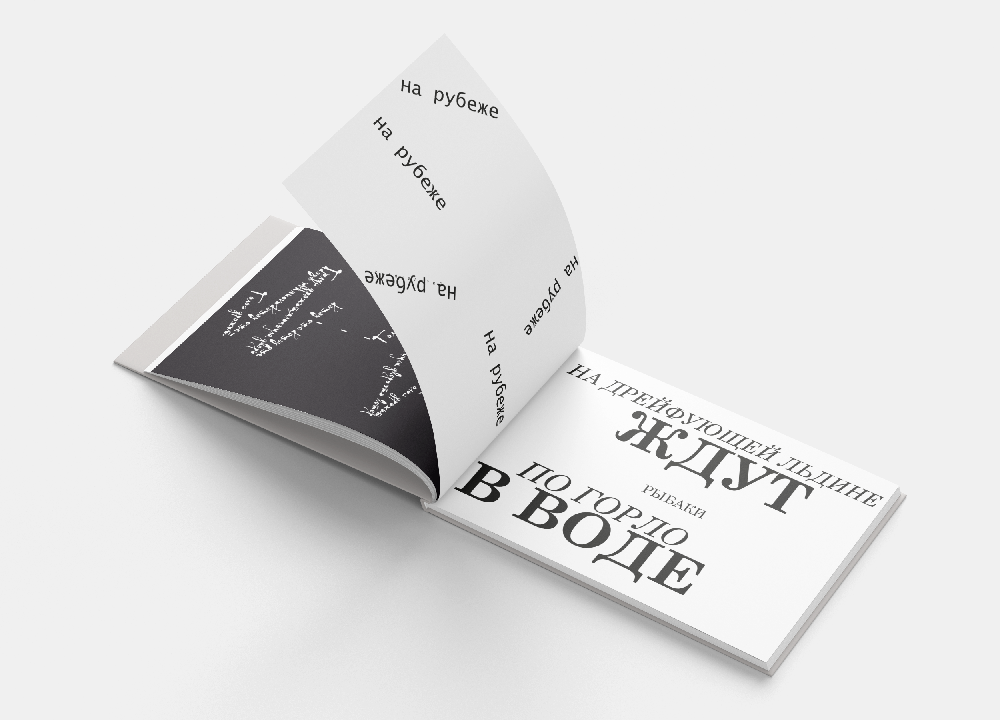
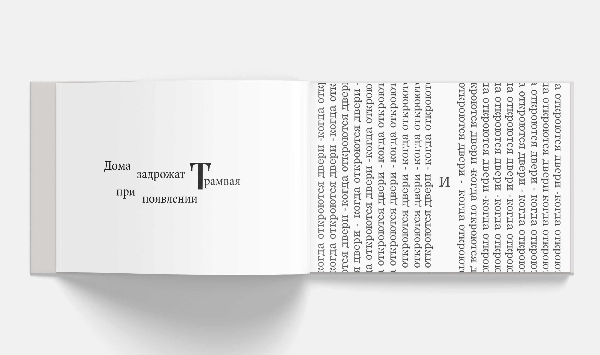

Артбук «Пой мне ещё»
Типографический арт-бук Песня группы Спилин «Пой мне еще» является одной из самых известных композиций культового альбома «25 кадр». Название группы происходит от английского слова splean, что в переводе означает “тоска”. Арт-бук представляет собой яркую интерпретацию текста песни, которая не только отражает музыкальную палитру группы, но и помогает с помощью шрифтового дизайна погрузиться в атмосферу песни и прочувствовать ее визуально.
 Интересным решением выступает и цветовое оформление работы. За основу были взяты три основных цвета: черный, белый и красный. Послушав песню, я подумала, что она бросает вызов не только современному социальному строю общества, но и внутренний вызов самому себе. Черный и белый цвета характеризуют грани человеческой личности, две стороны его характера, которые сменяют друг друга и никогда не существуют раздельно друг от друга. Красный цвет можно интерпретировать по-разному. С одной стороны, это цвет крови, печальных событий, которые приносят урон людям и их чувствам и разрушают тебя не только изнутри, но и снаружи. Если же посмотреть с другой стороны, красный цвет во многих культурах мира трактуется, как цвет победы. Внутренняя победа над собой, рывок в сторону изменения своих мыслей и чувств! Думаю, каждый день человек должен делать новый шаг в сторону улучшения себя, при этом оставаясь непоколебимым в своих принципах. Мне кажется арт-бук поможет не только ощутить красоту песни «Пой мне еще», но и посмотреть на слова и прочувствовать их силу и мощь. Арт-бук по песне «Пой мне еще» невероятно интересная работа, сочетающая в себе много смыслов и идей современного мира. Просматривая эту книжицу обязательно включите в наушниках трек и просто послушайте слова по-новому! Ведь прочитав этот текст вы уже не будете прежним!